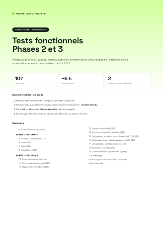
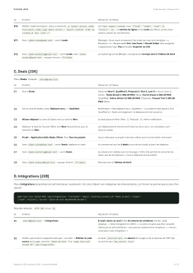
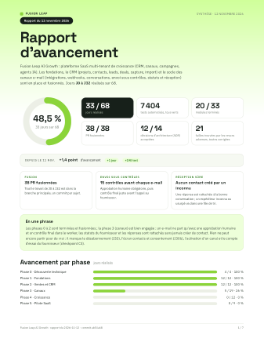
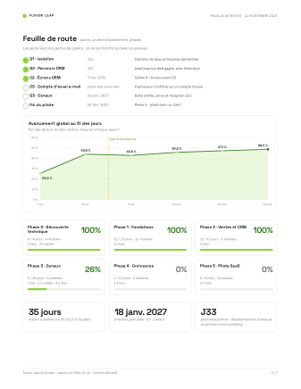

Fusion Leap AI Growth : plateforme SaaS multi-tenant de croissance (CRM, canaux, campagnes, agents IA). Les fondations, le CRM (projets, contacts, leads, deals, capture, import) et le socle des canaux e-mail (intégrations, webhooks, conversations, envoi sous contrôles, statuts et réception) sont en place et fusionnés. Jours J0 à J32 réalisés sur 68.
33 / 68
jours réalisés
7 404
tests automatisés, tous verts
20 / 33
modules terminés
42 / 47
PR fusionnées (5 en revue)
12 / 14
décisions d'architecture (ADR) acceptées
21
failles trouvées par les revues adverses, toutes corrigées
Depuis le 12 nov.0 point d'avancement 0 jour0 test
Fusion
42 PR fusionnées
Tout le travail de J0 à J32 est dans la branche principale, un commit par sujet.
Envoi sous contrôles
15 contrôles avant chaque e-mail
Approbation humaine obligatoire, puis contrôle final juste avant l'appel au fournisseur.
Réception sûre
Aucun contact créé par un inconnu
Une réponse est rattachée à la bonne conversation ; un expéditeur inconnu ou usurpé va dans une file de tri.
En une phrase
Les phases 0 à 2 sont terminées et fusionnées ; la phase 3 (canaux) est bien engagée : un e-mail ne part qu'avec une approbation humaine et un contrôle final dans le worker, les statuts du fournisseur et les réponses sont rattachés sans jamais créer de contact. Rien ne peut encore partir pour de vrai : il manque le désabonnement (J33), l'écran contacts et consentement (J30b), l'activation d'un canal et le compte d'essai du fournisseur (checkpoint C3).
Avancement par phase jours réalisés
Phase 0 · Découverte technique4 / 4 · 100 %
Phase 1 · Fondations12 / 12 · 100 %
Phase 2 · Ventes et CRM12 / 12 · 100 %
Phase 3 · Canaux5 / 19 · 26 %
Phase 4 · Croissance0 / 12 · 0 %
Phase 5 · Pilote SaaS0 / 9 · 0 %
FUSION LEAPJournal du jour · 14 novembre 2026
Journal du jour 14 novembre 2026
Le travail du jour raconté étape par étape : ce qui a été fait, les vérifications menées et le volume de code touché.
J'ai ajouté en base le secret de webhook par intégration, la file des e-mails non rattachés et les fonctions qui appliquent statuts et réponses.
Migration et retour arrière écritsTests pgTAP lancés
J'ai écrit l'adaptateur Postmark (authentification, événements normalisés, contrôle SPF), le traitement côté worker et l'endpoint du secret.
Adaptateur, worker et route webTests unitaires lancés
J'ai ajouté les tests d'acceptation du flux e-mail puis la documentation (API, runbook, ADR).
Tests d'acceptation lancésDocumentation mise à jour
J'ai fusionné la chaîne de PR dans la branche principale, en gardant un commit par sujet.
PR rebasées sur mainAucune branche supprimée
J'ai écrit le guide de tests des phases 2 et 3 (107 cas) et les outils d'appel de l'API, puis vérifié les résultats attendus sur l'application réelle.
Scénarios exécutésPages du PDF capturées

Couverture du guide

Un cas de test
J'ai refondu le rapport d'avancement en 7 pages, avec historique et comparaison avec le rapport précédent.
PDF régénéréPages capturées

Synthèse

Feuille de route
J'ai corrigé l'erreur de pnpm dev (module ES chargé par Turbopack) et mis à jour le runbook.
Correction vérifiéeCI verte
FUSION LEAPFeuille de route · 14 novembre 2026
Feuille de route jalons, courbe d'avancement, phases
Les jalons sont des portes de qualité : on ne les franchit qu'avec les preuves.
G1 · IsolationJ15Isolation de deux entreprises démontrée
G2 · Parcours CRMJ27Lead jusqu'au deal gagné, avec historique
C2 · Écrans CRM9 nov. 2026Option A : écrans avant G3
C3 · Compte d'essai e-mailavant tout envoi réelFournisseur confirmé sur un compte d'essai
G3 · Canaux18 janv. 2027Boîte unifiée, envoi et réception sûrs
Fin du pilote16 févr. 2027Phase 5 : pilote avec un client
Avancement global au fil des jours
Part des 68 jours du plan réalisés, mesurée à chaque rapport.
Phase 0 · Découverte technique
100%
4 / 4 jours · 4 modules 2 faits · 2 à valider
Phase 1 · Fondations
100%
12 / 12 jours · 12 modules 12 faits
Phase 2 · Ventes et CRM
100%
12 / 12 jours · 5 modules 5 faits
Phase 3 · Canaux
26%
5 / 19 jours · 6 modules 1 fait · 1 à valider · 4 à faire
Phase 4 · Croissance
0%
0 / 12 jours · 3 modules 3 à faire
Phase 5 · Pilote SaaS
0%
0 / 9 jours · 3 modules 3 à faire
35 jours
restent à réaliser sur 68 (51,5 % du plan)
18 janv. 2027
prochain jalon daté : G3 · Canaux
J33
prochaine journée : désabonnement, prérequis du premier envoi marketing
FUSION LEAPPhases 0 et 1 · 14 novembre 2026
Phase 0 — Découverte technique 4 jours
100 %
Jour
Module
Avancement
Statut
Livrable
J0
Analyse de la spec
100 %
Fait
Lacunes, questions, plan validé.
J1
ADR et modèle de données
100 %
À valider
Décisions d'architecture (ADR) et modèle de données rédigés.
Isolation entre entreprises, vérifiée par la vraie API
Worker et adaptateurs235
Tâches de fond et adaptateurs de fournisseurs
Acceptation (T1, T5)185
Parcours complets en HTTP réel sur l'application construite
Tests au fil des jours
Total à chaque rapport.
Contrôles automatiques
Lint, typecheck, tests unitaires, base de données (pgTAP), isolation par l'API réelle (RLS), acceptation en HTTP réel, build de production et recherche de fuites de secrets dans le bundle navigateur : tous verts. La CI GitHub exécute trois jobs à chaque PR.
Sécurité
Chaque journée passe une revue adverse indépendante (attaques réelles contre la base locale, lecture critique du code) puis une re-vérification : isolation entre organisations, journal d'audit non modifiable, secrets chiffrés et jamais renvoyés, aucun contenu de message dans les journaux. Les failles trouvées sont corrigées avant la fusion ; aucune faille exploitable ouverte connue.
Revues de sécurité adverses failles trouvées avant la fusion
Jour
Sujet
Résultat
J30
Conversations et messages
0 bloquant2 majeurs5 moyens
J31
Envoi d'e-mail sous contrôles
0 bloquant2 majeurs5 moyens
J32
Statuts et réception d'e-mail
1 bloquant1 majeur5 moyens
Toutes ces failles sont corrigées avant la fusion, avec un test qui la reproduit. Un bloquant empêche la fusion ; un majeur est corrigé le jour même.
FUSION LEAPDécisions et suite · 14 novembre 2026
Points ouverts et décisions à prendre
À traiter par la responsable technique, le propriétaire du produit ou l'équipe.
#PointQuiÉchéance
1Réponse à Q2 (propriétaire du domaine d'envoi) et ouverture d'un compte d'essai Postmark : tout ce qui dépend du fournisseur est une hypothèse à confirmer (en-têtes des e-mails entrants, métadonnées des événements, codes de rebond).Responsable techniqueAvant C3
2Aucun flux n'active encore un canal ou une intégration e-mail : sans lui, ni envoi ni réception réels.ÉquipeAvant C3
3Désabonnement (J33) et écran contacts et consentement (J30b) : prérequis d'un premier envoi marketing.ÉquipeAvant le premier envoi
4Q1 (API du CRM Fusion Leap) et Q5 (marché, région) : toujours sans réponse.Responsable techniqueAvant J34
5Compte développeur Meta bloqué (« compte trop récent ») : WhatsApp est critique pour J34.Propriétaire du produitAvant J34
6Choisir le fournisseur IA (ADR 012) et l'hébergeur (ADR 010).Responsable techniqueAvant J47 / J58
7Effacement d'un contact qui a des messages (droit à l'effacement) : procédure d'anonymisation à définir.Responsable techniqueAvant le pilote
8Purge des contenus conservés (événements de webhook, file de tri) et rétention du journal d'audit : sinon croissance sans limite.ÉquipeJ39 / J57
9Paramétrage de la palette et du logo : réservé aux administrateurs de la plateforme avant de vrais clients (condition de l'ADR 016).ÉquipeAvant J54
10Protection de la branche principale non activée sur GitHub ; un test de base de données (conversations) a échoué deux fois sans cause trouvée.Responsable techniqueÀ surveiller
Prochaines étapes
Quand
Action
Maintenant
Recette des phases 2 et 3 avec le guide de tests (PDF), par une personne qui n'a pas écrit le code.
J33
Désabonnement : jeton signé, en-têtes de désabonnement, page publique en arabe et en anglais, révocation du consentement et annulation des envois en attente.
J30b à J30d
Écrans contacts et consentement (avant le premier envoi), puis fiche lead (avant la boîte de réception).
J34 à J37
WhatsApp Cloud API et boîte de réception : dépend du compte Meta.
J38 à J41
Envoi et réception sûrs sur la boîte unifiée, jalon G3 le 18 janvier 2027.
Comment lire ce rapport
Avancement d'un module = part de ses livrables terminés et vérifiés : 100 % = code, tests et documentation livrés. Statuts : Fait fusionné · En revue PR ouverte · À valider fait mais à valider · À faire à faire. Avancement global = jours réalisés sur 68 (33 ÷ 68 = 48,5 %). Rapport régénéré à chaque commit (pnpm report:progress, branche day-30c-lead-page). Sources : docs/progress/journal.md, docs/plan/development-plan.md, scripts/progress-report/data.json, scripts/progress-report/history.json.